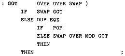
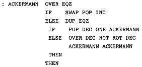
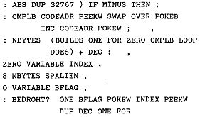
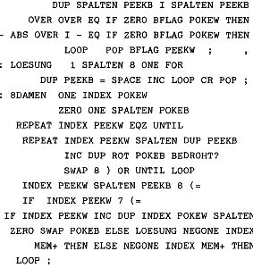

Nascom Journal |
Juli/August 1982 · Ausgabe 7/8 |
Die Eingabe muß genau in der hier angegebenen Form erfolgen; nur die bei den Maschinencode-Routinen angegebenen Adressen werden je nach Ausbau des Systems unterschiedlich sein; sie werden jedoch von den Funktionen „MCODE“ und „SYSTEM“ erzeugt.
Zunächst zwei Beispiele für rekursive Programmierung: (Argument1) (Argument2) GGT gibt den größten gemeinsamen Teiler der beiden Argumente auf den Stack.
Das zweite Beispiel ist die berühmte Funktion von Ackermann. Die beiden Argumente dürfen maximal die Werte (0 60), (1 60), (2 30), (3 3) und (4 0) annehmen, sonst gibt es einen Stacküberlauf.
Als letztes Beispiel das 8-Damen-Problem, das ich eigentlich in dieser Form gar nicht veröffentlichen dürfte, denn es ist schauderhaft herunterprogrammiert. Interessant ist aber der Zeitvergleich mit anderen Sprachen.

Das 8-Damen-Programm läuft ca. 6 Minuten – immer noch erheblich schneller als Basic, aber doch langsamer, als ich es erwartet hatte. Um den Grund herauszufinden, habe ich die Funktion ABS in Maschinensprache programmiert. Das Programm läuft dann bereits 20-30 Sekunden schneller. Damit ist auch klar, weshalb das System relativ langsam ist: ca. 80% des Interpreters (die Erweiterungen eingerechnet) ist im Fädelcode geschrieben. Würde man den gesamten „Kern“ des Systems in Maschinencode schreiben, würde sich die Arbeitsgeschwindigkeit vervielfachen. Den gleichen Hinweis gibt auch R. Loeliger in seinem Buch „THREADED INTERPRETIVE LANGUAGES“, auf das ich zum Abschluß hinweisen möchte. In einer sehr klaren Sprache und Gedankenführung beschreibt der Autor den Aufbau eines Fädelcodeinterpreters für Z-80-Systeme. Sämtliche Routinen werden in Maschinencode und in Fädelcode gezeigt. Das ganze ist eine Art Baukastensystem, mit dem man sich seinen eigenen Interpreter zusammenstellen kann. Auch für Leute, die keinen Assembler besitzen, ist das Buch interessant, den es enthält auch alle Bausteine für einen konditionellen Assembler. Ärgerlich an dem schönen Buch ist eigentlich nur der Preis in Deutschland (DM 65,–)!
Wer sich für die Entstehungsgeschichte von FORTH interessiert, der sei auf den sehr schönen Artikel von Charles H. Moore, dem „Erfinder“ der Sprache, in BYTE, August 1980, S.76 ff. verwiesen.
| Seite 48 von 60 |
|---|